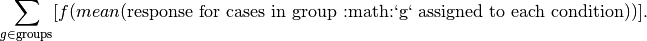

Stratified permutation tests.
permute.stratified.binom_conf_interval(n, x, cl=0.975, alternative='two-sided', p=None, xtol=1e-12, rtol=4.440892098500626e-16, maxiter=100)[source]¶Compute the confidence interval for a binomial.
| Parameters: | n : int
x : int
cl : float in (0, 1)
alternative : {“two-sided”, “less”, “greater”}
p : float in (0, 1)
xtol : float
rtol : float
maxiter : int
|
|---|---|
| Returns: | ci_low, ci_upp : float
|
permute.stratified.permute_within_groups(group, condition, groups, prng=None)[source]¶Permutation of a multiset.
| Parameters: | group : int
condition : int
groups : int
|
|---|---|
| Returns: | permuted : int
|
permute.stratified.permutetest_mean(x, y, reps=100000, stat='mean', alternative='greater', CI=False, level=0.95, seed=None)[source]¶One-sided or two-sided, two-sample permutation test for equality of two means, with p-value estimated by simulated random sampling with reps replications.
Tests the hypothesis that x and y are a random partition of x,y against the alternative that x comes from a population with mean
- greater than that of the population from which y comes, if side = ‘greater_than’
- less than that of the population from which y comes, if side = ‘less_than’
- different from that of the population from which y comes, if side = ‘both’
If stat == ‘mean’, the test statistic is (mean(x) - mean(y)) (equivalently, sum(x), since those are monotonically related)
If stat == ‘t’, the test statistic is the two-sample t-statistic–but the p-value is still estimated by the randomization, approximating the permutation distribution. The t-statistic is computed using scipy.stats.ttest_ind
If CI == ‘upper’, computes an upper confidence bound on the true p-value based on the simulations by inverting Binomial tests.
If CI == ‘lower’, computes a lower confidence bound on the true p-value based on the simulations by inverting Binomial tests.
If CI == ‘both’, computes lower and upper confidence bounds on the true p-value based on the simulations by inverting Binomial tests.
CL is the confidence limit for the confidence bounds.
output is the estimated p-value and the test statistic, if CI == False
output is <estimated p-value, confidence bound on p-value, test statistic> if CI in {‘lower’,’upper’}
output is <estimated p-value, [lower confidence bound, upper confidence bound], test statistic>, if CI == ‘both’
| Parameters: | group : int
|
|---|---|
| Returns: | permuted : int
|
permute.stratified.stratified_permutationtest(group, condition, response, iterations=10000.0, testStatistic=<function stratified_permutationtest_mean>, seed=None)[source]¶Stratified permutation test using the sum of the differences in means between two or more conditions in each group (stratum) as the test statistic.
The test statistic is

The function f is the difference if there are two conditions, and the standard deviation if there are more than two conditions.
There should be at least one group and at least two conditions. Under the null hypothesis, all assignments to the two conditions that preserve the number of cases assigned to the conditions are equally likely.
Groups in which all cases are assigned to the same condition are skipped; they do not contribute to the p-value since all randomizations give the same contribution to the difference in means.
| Parameters: | group : int
|
|---|---|
| Returns: | permuted : int
|
permute.stratified.stratified_permutationtest_mean(group, condition, response, groups, conditions)[source]¶Calculates variability in sample means between treatment conditions, within groups.
If there are two treatment conditions, the test statistic is the difference in means, aggregated across groups. If there are more than two treatment conditions, the test statistic is the standard deviation of the means, aggregated across groups.
| Parameters: | group : int
|
|---|---|
| Returns: | tst : float
|